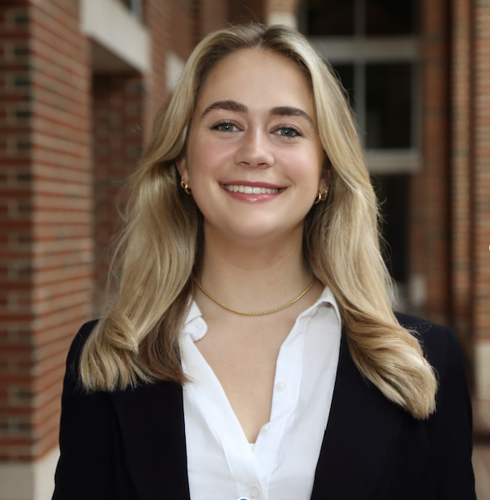
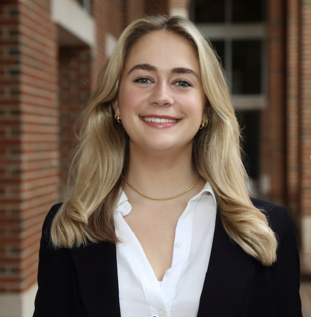
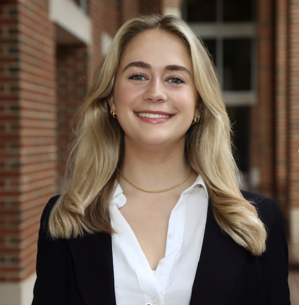
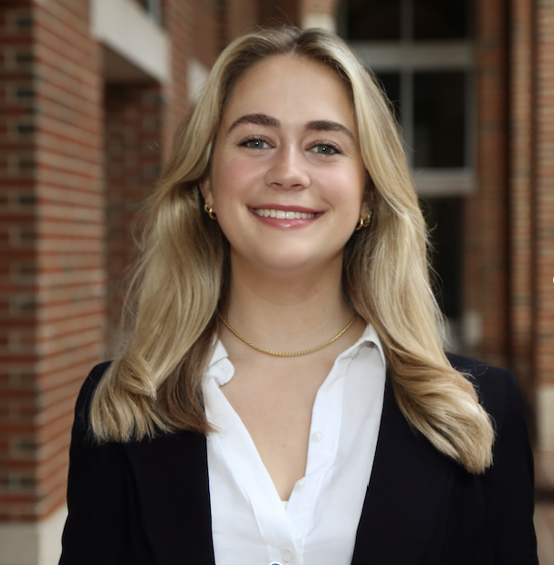
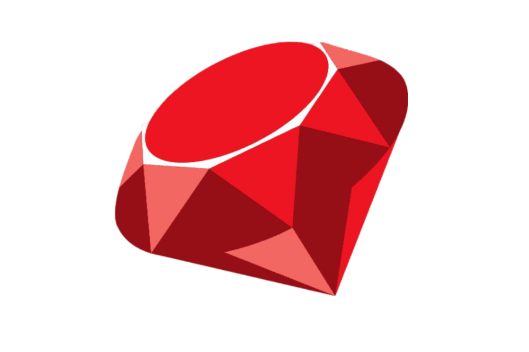
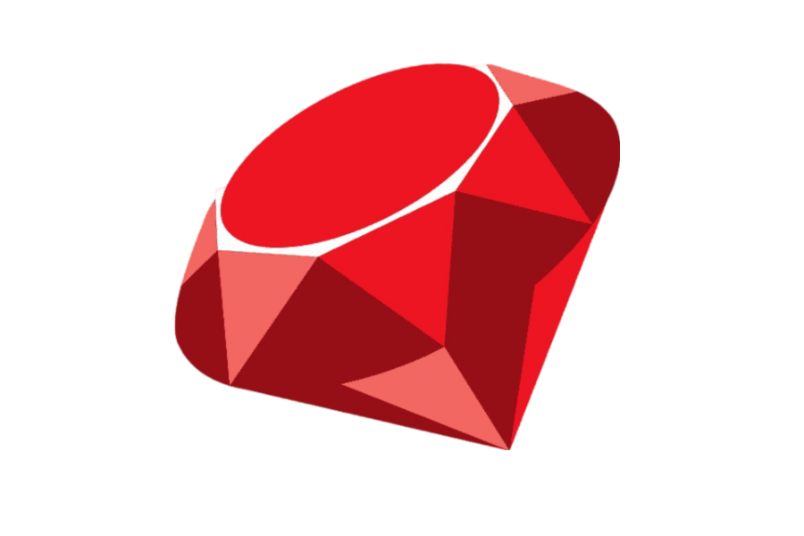

I'm passionate about understanding how people interact with the world around them and creating sustainable solutions that enhance their experiences and protect the planet. I enjoy building tools and systems that people can use and collaborating with others to bring ideas to life. While I love both business and technology, I'm most inspired by their intersection and how they work together to drive innovation and create meaningful and lasting impact.
I'm a sophomore at UNC Chapel Hill from New Orleans, LA pursuing a double major in Computer Science and Business Administration. To combine these two passions, I’ll be working as a Fraud Product Strategy Intern at SAS.
My professional passions focus on product development and management, with a particular interest in creating innovative products that will shape the future of technology. My personal passions include traveling (Spain, South Africa), literature (classics, science fiction), hiking (Maroon Bells, Mt. Fuji), art museums, scuba diving, cooking, and photography.
 
